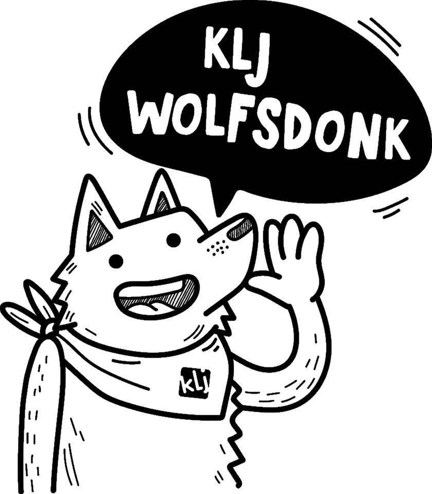

Activiteiten
Het is maart, en dat betekent dat het bijna lente is. Voelen jullie de lentekriebels al? De leiding alvast wel!
Wij herinneren jullie er graag nog eens aan dat je voor de KLJ nóóit goede kleren aandoet, enkel kleren die vuil mogen worden. Ook al schijnt de zon, vergeet niet om je warm genoeg aan te kleden. In de schaduw kan het nog steeds koud zijn!Zaterdag 2 maart:
Morgen is het carnaval, maar omdat één dag zo weinig is, gaan we dat vandaag ook al een beetje vieren op de KLJ! Trek je kast open en haal je meest knotsgekke outfit boven om te komen schitteren van 14u tot 17u aan ons lokaal.
Skunks: Vandaag hebben jullie je fiets en fietshelm nodig, en vergeet zeker ook geen slechte kleren aan te doen!
Zaterdag 9 maart:
Wist je dat Barbie vandaag 60 jaar wordt? Ze ziet er best goed uit voor haar leeftijd, nee? Maar op de KLJ spelen we natuurlijk niet met Barbies, maar spelen doen we wel! Ook deze week mogen jullie van 14u tot 17u aan ons lokaal komen ravotten. Tot dan!
Zaterdag 16 maart:
Jammer genoeg is er geen activiteit vandaag, want morgen is het onze eetdag!
Zondag 17 maart:
Hmm ruik je dat? Heerlijke videe of stoofvlees, en frikandellen met krieken, of een koude schotel, en curryworst of taart! Weet je waar je al dat lekker eten kan vinden? In zaal Den Abt, van 11.30u tot 18u, op onze jaarlijkse eetdag!
Kom zeker een hapje eten, en breng al je vrienden en familie mee, want dit jaar gaat de opbrengst naar ons binnenlands kamp én het buitenlands kamp in Slowakije!
Zaterdag 23 maart:
Joepie! Het is ein-de-lijk officieel lente! De vogeltjes beginnen aan hun nestjes, de bijtjes zoemen vrolijk door de bloemetjes, en het is KLJ! Van 14u tot 17u kunnen jullie in het lentezonnetje komen spelen aan ons lokaal.
Zaterdag 30 maart:
Het is niet omdat we deze nacht een uurtje minder kunnen slapen door de start van het zomeruur, dat we minder hard gaan spelen op de KLJ! Kom meespelen van 14u tot 17u aan ons lokaal in Wolfsdonk!
Zaterdag 6 april:
Vandaag geen activiteit, want morgen is het gewestactiviteit!
Aspi’s: Voor jullie is het vanavond al gewestactiviteit. Meer info hierover volgt nog.
Zondag 7 april:
Vandaag is het gewestactiviteit (niet voor de aspi’s)! En dat betekent samenspelen met KLJ’s van het hele gewest! Dit jaar gaat de gewestactiviteit door bij KLJ Keiberg, Lobbensestraat 93A. We spreken af in Keiberg zelf om 14u, en de ouders mogen jullie er weer komen oppikken om 16.30u.
Vrijdag 12 t.e.m. zondag 14 april:
Dit weekend niet één dag, maar een heel weekend KLJ! We nemen jullie dit weekend terug mee naar de ijstijd, dus vergeet zeker jullie bontjas en knots niet! En wie weet zien we wel prehistorische dieren, zoals een mammoet!
Vrijdagavond om 19u worden jullie verwacht in Balen. Eet zeker thuis, want er wordt vrijdagavond geen eten voorzien. Zondag om 10u mogen de mama’s en papa’s jullie weer komen oppikken.
Meer informatie over het weekend en het inschrijvingsformulier vind je hier
Vrijdag 19 april:
Deze avond houden we ons KLJ-café weer! Vanaf 20u is iedereen welkom in zaal Den Abt om een glaasje te drinken, een babbeltje te slaan en een snackje te eten. Ook deze opbrengst gaat naar de kampen, dus nodig iedereen die je kent maar uit!
Zaterdag 20 april:
Elke zaterdag spelen we in de bossen en op de pleinen van het mooie Wolfsdonk, en in het dorp zelf. Vandaag zeggen we ‘dank u’ tegen ons dorpje door het helemaal op te ruimen! Breng je werkhandschoenen mee en kom van 14u tot 17u naar ons lokaal om de handen uit de mouwen te steken!
Zaterdag 27 april:
Vandaag is het een speciale dag. Niet alleen omdat het vandaag Koningsdag in Nederland is, of omdat het Wereld Tapir Dag is. Vandaag is vooral speciaal omdat het KLJ is! Joe-hoe! Van 14u tot 17u vliegen we er weer in! Kom zeker kijken wat de leiding vandaag weer in petto heeft.